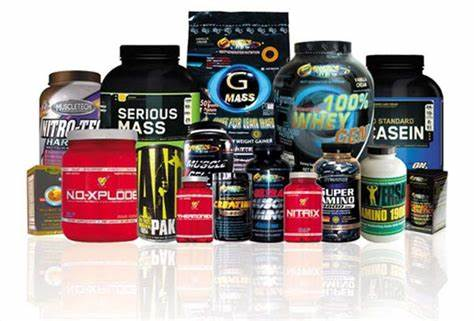
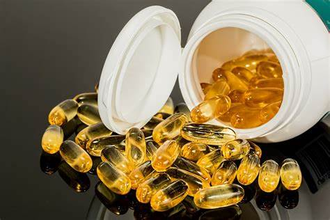
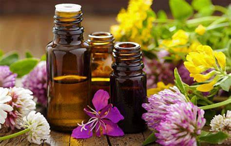
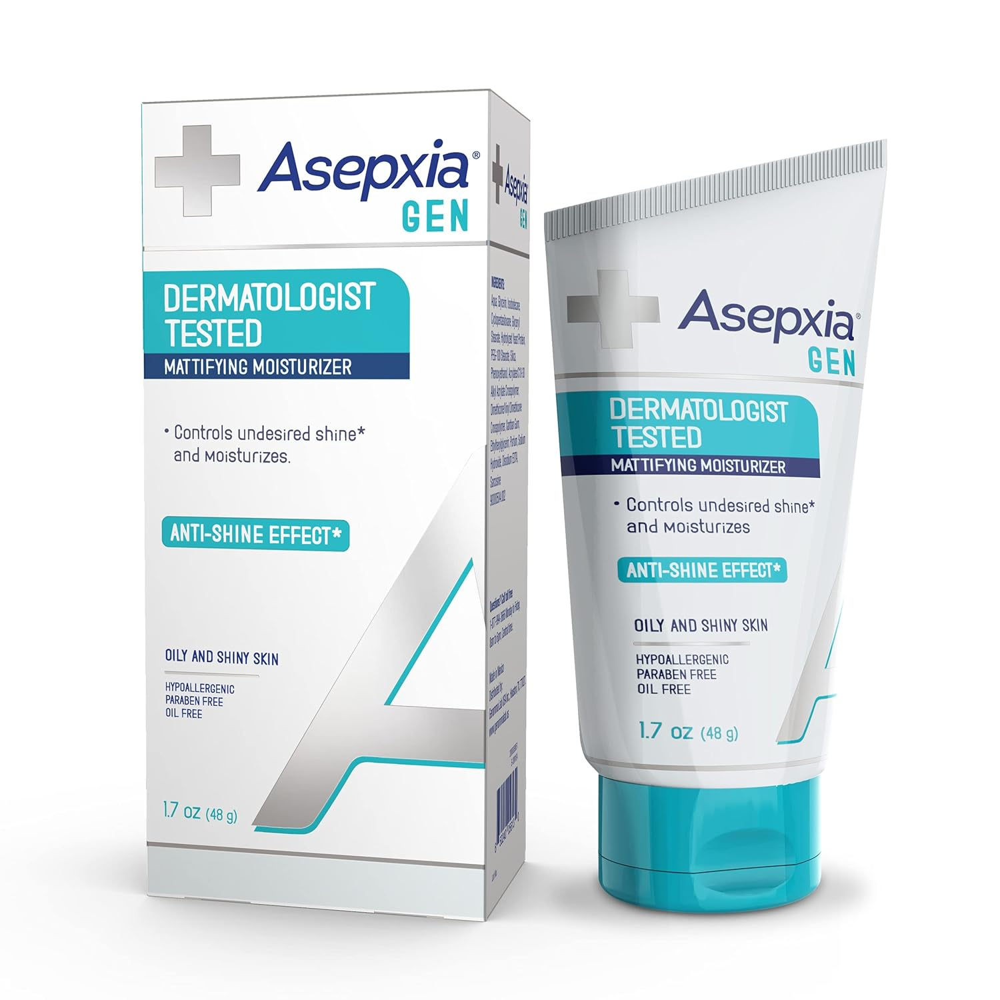
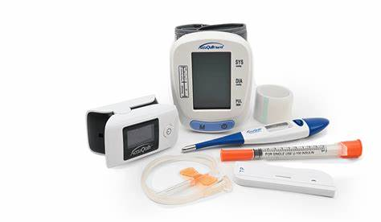
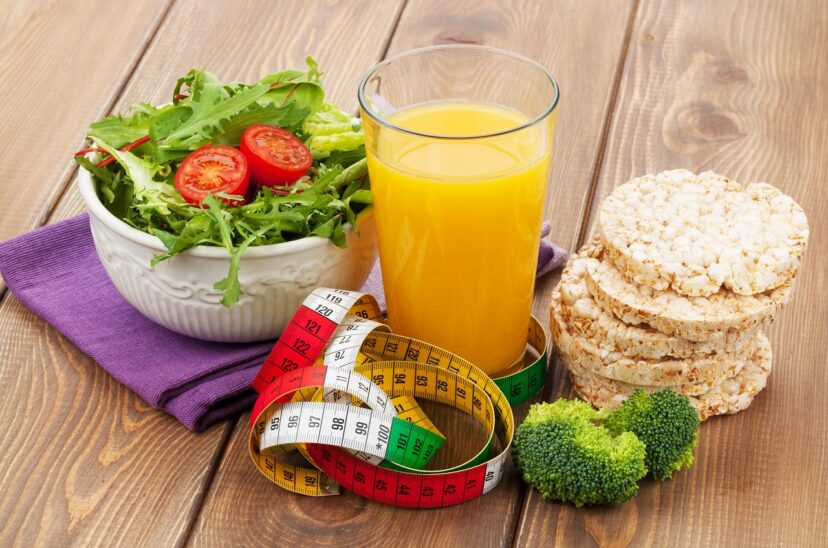

En nuestra farmacia puedes encontrar...
Medicamentos Recetados por tu doctor
- Son productos farmacéuticos utilizados para prevenir, tratar, o aliviar enfermedades, síntomas o condiciones de salud. Pueden ser recetados por un médico o de venta libre.
- Medicamentos con receta: Antibióticos, antihipertensivos, analgésicos fuertes.
- Medicamentos de venta libre: Paracetamol, ibuprofeno, antihistamínicos.
Productos de Cuidado Personal
Productos utilizados para el cuidado y la higiene del cuerpo, la piel, el cabello, etc. Están destinados a la salud personal y al bienestar diario.
- Higiene personal: Jabones, geles de ducha, desodorantes.
- Cuidado del cabello: Champús, acondicionadores, tratamientos capilares.
- Cuidado de la piel: Crema hidratante, protectores solares, lociones corporales.
Suplementos Alimenticios
- Productos que se utilizan para complementar la dieta, proporcionando nutrientes que pueden no estar presentes en cantidades suficientes en los alimentos.
- Vitaminas y minerales: Multivitamínicos, calcio, hierro.
- Suplementos deportivos: Proteínas en polvo, aminoácidos.
- Suplementos herbales: Extractos de plantas como ginseng, manzanilla, valeriana.

Productos para el Cuidado de la Salud y Bienestar
- Artículos que se utilizan para el monitoreo, tratamiento o prevención de ciertas condiciones de salud. Incluye productos para aliviar molestias menores o mantener una buena salud.
- Termómetros y tensiómetros: Para medir la temperatura corporal o la presión arterial.
- Venda y apósitos: Para curar o cubrir heridas.
- Aceites esenciales y productos de aromaterapia.

Productos Naturales y Homeopáticos
- Productos que se basan en ingredientes naturales o en la medicina tradicional alternativa. Están diseñados para ofrecer una opción más natural de tratamiento y prevención de enfermedades.
- Terapias herbales: Té de manzanilla, té de jengibre.
- Productos homeopáticos: Remedios diluidos de origen vegetal, animal o mineral para tratar diversas afecciones.

Cosméticos
- Productos utilizados para embellecer, proteger o mejorar la apariencia del cuerpo. A menudo están relacionados con la estética y la salud de la piel.
- Maquillaje: Base, lápiz labial, máscara de pestañas.
- Cremas y lociones antiarrugas: Productos antienvejecimiento.
- Perfumes y colonias.

Dispositivos Médicos
- Equipos y herramientas que se utilizan para diagnosticar, prevenir o tratar condiciones de salud. Están destinados a ser utilizados por profesionales de la salud o por los propios pacientes.
- Sillas de ruedas, muletas o bastones.
- Inhaladores y nebulizadores para problemas respiratorios.
- Glucómetros para medir la glucosa en sangre.

Alimentos y Bebidas Dietéticas
- Productos alimenticios diseñados para satisfacer necesidades dietéticas específicas, como para personas con alergias, intolerancias o condiciones de salud específicas.
- Alimentos sin gluten, sin lactosa.
- Bebidas isotónicas o energéticas.
